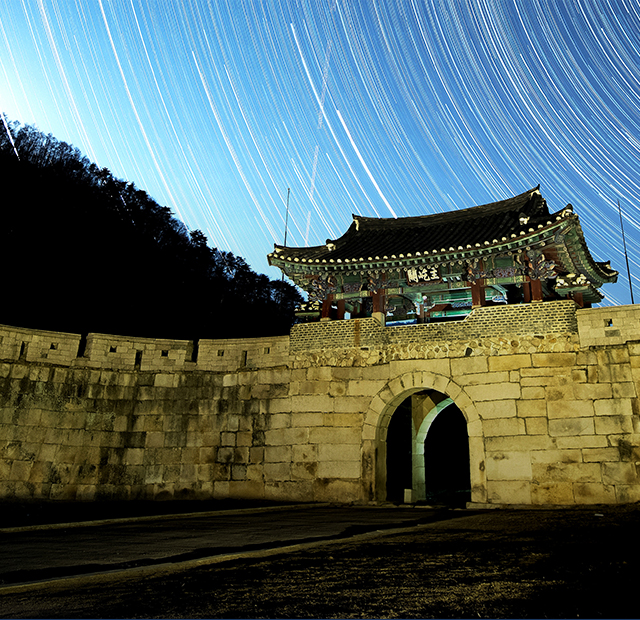
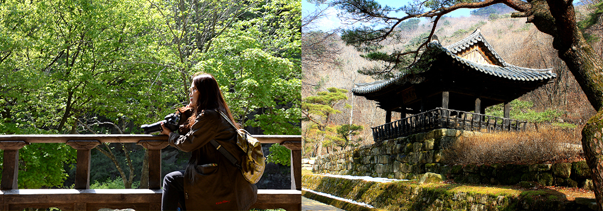

와 제 롤모델이 잡스에요!!! 아이폰 첫 출시되고 나서부터 계속 아이폰 쓰고 있는데 잡스가 너무 그리워요ㅠㅠ 지금은 돈만 벌려고 하는 것 같아서 디자인 발전도 없고ㅠㅠ와 제 롤모델이 잡스에요!!! 아이폰 첫 출시되고 나서부터 계속 아이폰 쓰고 있는데 잡스가 너무 그리워요ㅠㅠ 지금은 돈만 벌려고 하는 것 같아서 디자인 발전도 없고ㅠㅠ와 제 롤모델이 잡스에요!!! 아이폰 첫 출시되고 나서부터 계속 아이폰 쓰고 있는데 잡스가 너무 그리워요ㅠㅠ 지금은 돈만 벌려고 하는 것 같아서 디자인 발전도 없고ㅠㅠ와 제 롤모델이 잡스에요!!! 아이폰 첫 출시되고 나서부터 계속 아이폰 쓰고 있는데 잡스가 너무 그리워요ㅠㅠ 지금은 돈만 벌려고 하는 것 같아서 디자인 발전도 없고ㅠㅠ와 제 롤모델이 잡스에요!!! 아이폰 첫 출시되고 나서부터 계속 아이폰 쓰고 있는데 잡스가 너무 그리워요ㅠㅠ 지금은 돈만 벌려고 하는 것 같아서 디자인 발전도 없고ㅠㅠ
여행에 빠지다

7월에 떠나기 좋은 국내 여행지 추천
자연 풍광에 취하는
‘경북 문경’
누군가 필자에게 경북에서 가장 가볼 만한 곳 세 곳을 추천하라고 한다면 그중 한 곳으로 꼽을 만한 곳이 문경이다. 문경은 문경을 끼고 있는 새재가 있는 주흘산을 비롯해 7부 능선까지 계곡이 아름다운 대야산, 석탄박물관 등 볼거리가 풍부하다. 이번 호에서는 여름에 물놀이 하기 좋은, 2015년 생태관광자원 부문에서 ‘한국관광의 별’로 선정된 바 있는 문경을 소개한다.
글
우현석 (서울경제신문 객원기자 겸 여행 작가)
사진
문경시청 제공
-
문경은 여러 가지 볼거리가 풍부하지만 그중에서도 첫 손가락에 꼽을 만한 곳은 대야산이다. 대야산은 일반에게는 상대적으로 덜 알려진 곳이나, 백두대간 정맥의 한 구간으로 산세가 아기자기하고 계곡이 아름답다. 특히 대야산 초입에 있는 용추계곡은 폭포와 어우러진 하트 모양의 물웅덩이가 탄성을 자아내게 한다. 대야산은 경상북도 문경시와 충청북도 괴산군 청천면에 걸쳐있는데 문경 쪽으로 선유동계곡이, 괴산 방면에는 그 유명한 화양구곡이 펼쳐져있다.
-
대야산
초입에 있는 용추계곡은 폭포와 어우러진 하트 모양의 물웅덩이가 탄성을 자아내게 한다.
문경에 왔다면 꼭 가보아야 할 곳이 문경새재이다. 옛 선비들이 한양으로 과거를 보러 갈 때 넘던 고개다. 남쪽 지방에서 한양으로 향하는 길은 여럿 있었지만 영주와 단양 사이에 있는 죽령(竹嶺)을 넘으면 ‘죽죽’ 미끄러지고, 영동군과 김천시 경계의 추풍령을 넘으면 ‘추풍낙엽(秋風落葉)’처럼 떨어진다고 해서 선비들은 굳이 새재를 택했다. 하지만 새재는 험하기로 유명한 고개였다. ‘하늘을 나는 새도 쉬어 넘는다’고 해서 새재라는 이름이 붙었다는 설이 있을 정도니, 산을 넘는 고생은 과거 공부만큼이나 쉽지 않았을 것이다.
-
주흘관
문경새재 초입의 1관문으로 300년 전에 축성된 문루로 사적 제147호로 지정됐다.
하지만 지금은 주흘산 정상부근의 3관문까지 길이 잘 닦여 있어 트레킹 수준으로, 힘들지 않게 오를 수 있다. 새재 초입의 1관문인 주흘관은 300년 전에 축성된 문루로 사적 제147호로 지정됐다. 주흘관을 뒤로 하고 30분가량 더 걸어 오르면 교귀정이 모습을 드러낸다. 교귀정은 관찰사가 새로 부임하면 전임자와 업무를 인수인계하던 곳으로 1470년 축조했다가 불타 없어진 것을 1999년에 다시 복원했다. 교귀정 앞에는 굵은 소나무 한 그루가 길 가는 나그네에게 그늘을 만들어주려는 듯 상반신을 구부리고 있는데 이 모습이 참 아름답다.
교귀정 맞은 편으로 흐르는 계곡은 용추인데 앞서 설명한 가은읍 완장리의 용추계곡과는 같은 이름이지만 위치는 상당히 떨어져 있다. 이 곳은 가뭄이 길어지면 기우제를 지내던 곳으로 용이 승천했다는 전설이 있다. 김귀남 해설사는 “이곳은 겸재 정선이 현감으로 재임하던 중 진경산수로 표현했을 만큼 풍광이 아름다운 곳”이라며, “이곳 사람들은 가은읍 완장리에 있는 용추를 용추계곡으로, 새재에 있는 이곳은 그냥 용추라고 부른다”고 말했다. 이곳 용추는 대하드라마 ‘태조 왕건’촬영 때 궁예가 죽는 마지막 장면을 촬영해 유명세를 타기도 했다.
-

교귀정
교귀정은 밖에서 바라보는 모습도 아름답지만 정자에 올라 밖을 향해 사진을 찍으면 누구나 좋은 결과물을 얻을 수 있다.
자연풍광이 수려한 문경은 도자 문화가 발달한 곳으로도 유명하다. 문경을 도예의 메카로 꼽는 이유는 40곳이 넘는 가마들이 산재한 데다, 중요무형문화재 2명이 도예의 맥을 이어오고 있기 때문이다. 문경이 백자의 본향으로 이름을 날리는 또 다른 이유는 망댕이 가마 때문이다. 망댕이 가마는 우리나라 특유의 전통 가마로 길이 25cm, 지름 약 13cm 정도로 뭉친 흙덩어리를 15° 정도의 경사로에 5~6칸을 쌓아 만든 가마를 말한다. 이렇게 쌓아 올린 가마 한 개의 크기는 지름 2.5m 정도로 6칸이 이어지면 15m가 넘는다.
문경읍 관음리에는 180년 전 만들어져 우리나라에서 가장 오래된 전통 망댕이 가마가 지금도 남아있다. 이종범 문경도자기박물관장은 “망댕이 가마로 만든 백자가 가치를 인정받는 것은 전기로 구워낸 도자기들에 비해 실패율이 높아 완성품의 숫자가 적기 때문”이라고 말했다. 하지만 망댕이 가마는 단열효과가 뛰어나고 불꽃의 변화와 움직임, 온도에 따라 문경도자기만의 독특한 색깔과 문양을 만들어내는데, 같은 가마에서 구운 도자기들이라도 가마 내의 온도와 물리적 환경이 달라, 전 세계에서 한 개뿐인 도자기로 태어나는 것이 특징이다.
TIP서울에서 찾아가는 방법
-
 고속버스 서울고속버스터미널 → 점촌시외고속버스터미널 (약 2시간 소요)
고속버스 서울고속버스터미널 → 점촌시외고속버스터미널 (약 2시간 소요) -
 SRT 수서역 → SRT 김천구미역 → 점촌버스터미널 (약 2시간 30분소요)
SRT 수서역 → SRT 김천구미역 → 점촌버스터미널 (약 2시간 30분소요) -
 자가용 올림픽대로 → 제2중부고속도로 → 중부내륙고속도로 (약 2시간 30분 소요)
자가용 올림픽대로 → 제2중부고속도로 → 중부내륙고속도로 (약 2시간 30분 소요)
-
최고예요
322
-
좋아요
322
-
슬퍼요
322
-
그저 그래요
322
-
화나요
322